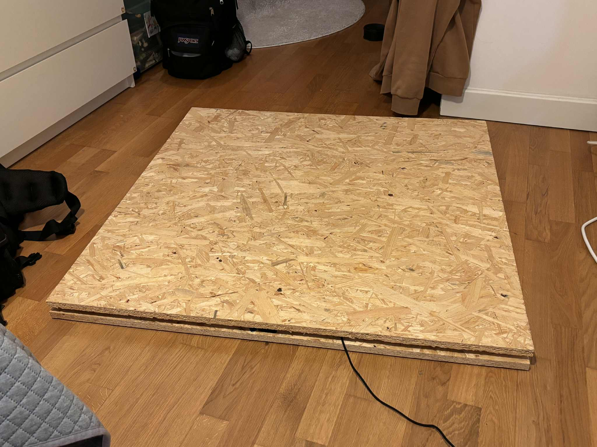
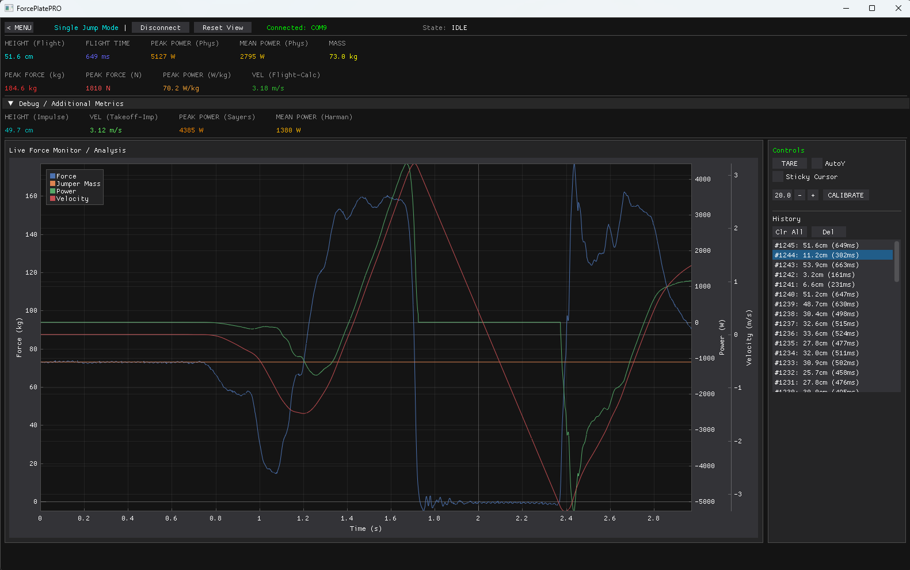

Force Plate
A low-cost prototype force plate for jump analysis. The system combines ESP32 firmware, eight load cells, a 24-bit CS1238 ADC, serial data streaming, and a Python desktop app for visualizing force, velocity, power, flight time, and jump height.


Hardware
The prototype uses eight beam load cells arranged under a 1m x 1m platform. Four paired load-cell groups form the bridge wiring that feeds the CS1238 ADC. The ESP32 reads the ADC through GPIO pins and streams raw values over USB serial at 921600 baud.
| Component | Role | Notes |
|---|---|---|
| 8 load cells | Ground-reaction force sensing | Bathroom-scale style beam sensors, 50 kg each. |
| CS1238 | 24-bit ADC | Configured for high-rate sampling and PGA gain. |
| ESP32 | Firmware and transport | Samples data, auto-tares, reports values to the desktop app. |
Measurement Algorithm
The software models a jump as a state machine: idle/weighing, ready, propulsion, in-air, and landing. Body mass is measured only after the platform is stable. During propulsion, force is integrated to estimate takeoff velocity. During flight, jump height can also be derived from flight time.
- Retroactive impulse integration captures the start of the movement before the trigger threshold.
- Phase detection separates unweighting from actual flight.
- Smart auto-tare compensates slow drift while the platform is unloaded.
- Bounce protection avoids false landing detections directly after takeoff.
Next Iteration
The current build proves the measurement and software pipeline. The natural next steps are a metal frame, higher-grade sensors, and Bluetooth Low Energy transport so the platform can operate without a USB cable.